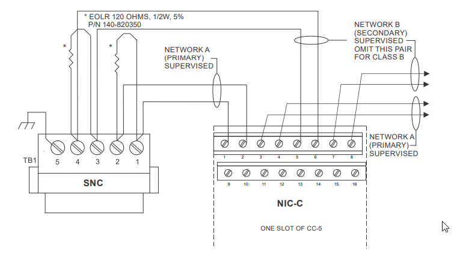
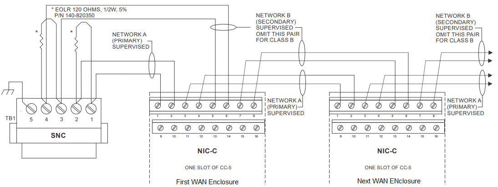

Fire WAN Enclosure Components and HNET Wiring
HNET is required to allow communication between Desigo CC (via SNC) and HUB-4s (via NIC-C).
The HNET card can be wired in a Class B or Class X configuration using either dedicated copper wire (per published constraints) or fiber modules.
A single HNET can be connected to the SNC card on the management station.
Additional HNET networks for hosting WAN Enclosures can be connected to additional systems (in distribution or independent).
Fire WAN Enclosure Components
WAN Enclosure Component | Description / Color | Installation Instruction |
|---|---|---|
CAB1-X | Complete CAB1-X Single Row Enclosure – Black | 315-034369 |
CAB2-BB | CAB2 Two Row Backbox – Black CAB3 Three Row Backbox – Black | 315-033009 |
CAB2-XBD | CAB2 Transponder Door for Two Row Backbox – Black CAB3 Transponder Door for Three Row Backbox – Black | 315-033768 |
CAB-MP | Mounting Plate for CAB enclosures -Silver (OPTIONAL in the CAB2 and CAB3 - One CAB-MP is needed for each CAB Row, if used) | 315-033012 |
CAB1-TK CAB2-TK CAB3-TK | Flush Trim Kit for CAB1-COM – Black Flush Trim Kit for CAB2 – Black Flush Trim Kit for CAB3 – Black | 315-033013 |
CC-2 / CC-5 | System Card Cage | 315-033035 |
NIC-C | Network Interface Card | 315-033240 |
PSC-12 | 12 Amp Power Supply | 315-033060 |
PSX-12 | 12 Amp Power Supply Extender | 315-034120 |
HUB-4 | HUB-4 Communication Card | 315-099458 |
No. of HUB-4s Required | PSC-12 Count | NIC-C Count | PSX-12 Count | CAB size |
|---|---|---|---|---|
1-6 | 1 | 1 | - | CAB-1 |
7-9 | 1 | 1 | - | CAB-2 |
10-14 | 1 | 1 | 1 | CAB-2 |
15-19 | 1 | 1 | 1 | CAB-3 |
20-21 | 1 | 1 | 2 | CAB-3 |
22+ | Additional WAN Enclosures required | |||
Single WAN Enclosure Connection
The HNET connections are made to the SNC which will be assigned to the Fire WAN Driver. See the connection schematic below.
For wiring details, refer to the SNC Installation Instructions, P/N A6V101018824.

Multiple WAN Enclosures Connection
There are 2 methods of handling multiple WAN Enclosures:
- One WAN Enclosure per HNET (each with a separate SNC and WAN Driver instance for each: refer to the figure above)
NOTE: A separate system equipped with SNC is required. - Multiple WAN Enclosures on same HNET (with a single SNC and WAN Driver instance: refer the figure below)
The first method is preferable from a performance perspective, but method 2 is also supported.

NOTES:
- The screw terminals can accommodate one 12-24AWG or two 16-24AWG.
- From the SNC to NIC-C:
2000 feet (33.8 ohms) max. per pair between CC-5s/CC-2s.
Unshielded twisted pair:
- .25pF max. line to line
Shielded twisted pair:
- .15pF max. line to line
- .2pF max. line to shield - Use twisted pair or twisted shielded pair.
- Terminate shields at one and only one NIC-C.
- Power limited to NFPA 70 per NEC 760.
- Maximum voltage 8V P-P.
- Maximum current 75mA during message transmission.
- Each pair independently supervised.
- Positive or negative ground fault detected at SIOK ohms on pins 1-2, 3-4, 5-6, 7-8 of the NIC-C.